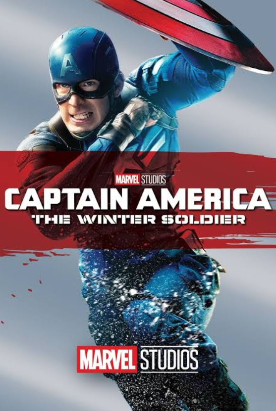
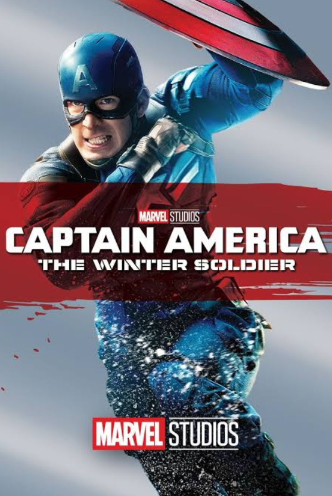
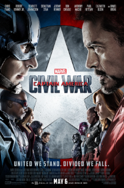
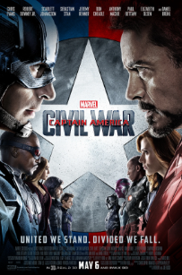
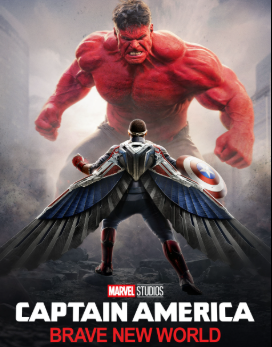
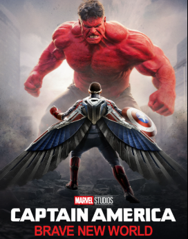

Captain America
Steve Rogers, a frail young man, is transformed into the super-soldier Captain America during World War II, fighting for justice and freedom with his enhanced strength, agility, and indomitable spirit.
Captain America is a superhero created by Joe Simon and Jack Kirby who appears in American comic books published by Marvel Comics. The character first appeared in Captain America Comics #1, published on December 20, 1940, by Timely Comics, a corporate predecessor to Marvel. Captain America's civilian identity is Steven "Steve" Rogers, a frail man enhanced to the peak of human physical perfection by an experimental "super-soldier serum" after joining the United States Army to aid the country's efforts in World War II. Equipped with an American flag–inspired costume and a virtually indestructible shield, Captain America and his sidekick Bucky Barnes clashed frequently with the villainous Red Skull and other members of the Axis powers. In the war's final days, an accident left Captain America frozen in a state of suspended animation until he was revived in modern times. He resumes his exploits as a costumed hero and becomes the leader of the superhero team the Avengers, but frequently struggles as a "man out of time" to adjust to the new era.
The character quickly emerged as Timely's most popular and commercially successful wartime creation upon his original publication, though the popularity of superheroes declined in the post-war period and Captain America Comics was discontinued in 1950. The character saw a short-lived revival in 1953 before returning to comics in 1964 and has since remained in continuous publication. Captain America's creation as an explicitly anti-Nazi figure was a deliberately political undertaking: Simon and Kirby were stridently opposed to the actions of Nazi Germany and supporters of U.S. intervention in World War II, with Simon conceiving of the character specifically in response to the American non-interventionism movement. Political messages have subsequently remained a defining feature of Captain America stories, with writers regularly using the character to comment on the state of American society and government.
Having appeared in more than ten thousand stories, Captain America is one of the most popular and recognized Marvel Comics characters, and has been described as an icon of American popular culture. Though Captain America was not the first United States–themed superhero, he would become the most popular and enduring of the many patriotic American superheroes created during World War II. Captain America was the first Marvel character to appear in a medium outside of comic books, in the 1944 serial film Captain America; the character has subsequently appeared in a variety of films and other media, including the Marvel Cinematic Universe, where he was portrayed by actor Chris Evans from the character's first appearance in Captain America: The First Avenger (2011) to his final appearance in Avengers: Endgame (2019).
Movies:

 

 


 
